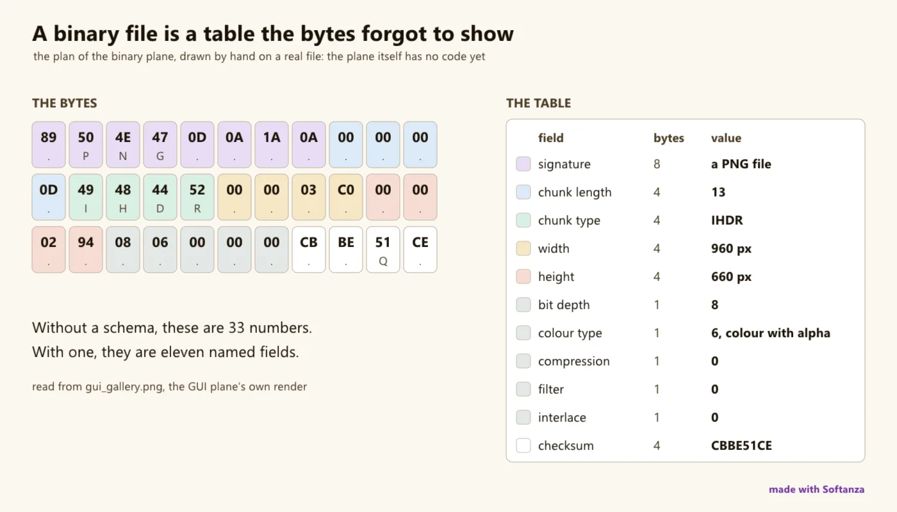

Formats binaires
Un plan acté et aucun code livré ; noté sur le substrat et la feuille de route BN0 à BN5.
0 Strong · 0 Solid · 1 Partial · 9 Emerging
Mesuré contre : Kaitai Struct · construct · 010 Editor · Dossiers : base/binary(s'ouvre dans un nouvel onglet) · Pour les programmeurs : la référence de ce domaine

Repensé depuis les premiers principes
Ce que Softanza a gardé de ce qui marche, et ce qu'elle a repensé, tel que la bibliothèque l'a écrit dans ses documents de conception et ses narrations.
La manière SoftanzaUn fichier binaire est un tableau que les octets ont oublié de montrer : on décrit sa structure une fois, sous forme de données, et les octets deviennent lignes et colonnes.
Gardé des meilleures pratiques
- La structure se déclare comme des données, pas comme du code d'analyse. Kaitai Struct et les copybooks COBOL l'ont montré ; un copybook devient un format d'entrée parmi d'autres. source(s'ouvre dans un nouvel onglet)
- Les règles de type de COBOL (clauses PIC) sont reprises et appliquées correctement : texte, binaire, décimal zoné et décimal condensé, avec échelle et signe. source(s'ouvre dans un nouvel onglet)
- La vue hexadécimale classique est conservée : position, octets en hexadécimal et texte lisible côte à côte, avec en plus le nom de chaque champ sur sa plage. source(s'ouvre dans un nouvel onglet)
Repensé
- Un fichier décodé arrive sous forme de tableau vivant, où résumés, statistiques, graphiques et export sont déjà prêts : l'explorer ne demande aucune étape de plus. (prévu) source(s'ouvre dans un nouvel onglet)
- Le même schéma sert aussi à écrire des fichiers. Un artisan raconte chaque champ et ses octets : il enseigne la structure aux débutants et produit les fichiers de test. (prévu) source(s'ouvre dans un nouvel onglet)
- Un enregistrement abîmé produit un verdict, jamais un plantage : un vieux fichier contient forcément des données corrompues, et un outil qui s'arrête à la première est inutile. (prévu) source(s'ouvre dans un nouvel onglet)
- Les schémas sont déclarés, jamais devinés à partir des octets. L'inférence de format est refusée : c'est un autre produit, du niveau de la recherche. (prévu) source(s'ouvre dans un nouvel onglet)
The one pilot page that rates a plan, not a product: the binary plane is 607 lines of design and zero shipped code -- no classes, no decode engine, no tests, no phase has run. The bet is to treat a binary file as 'a table the bytes forgot to show', decoded in one engine crossing into the stzTable analysis stack that already exists, with zero new DLLs; the substrate is real, everything above it is named, sequenced (BN0-BN5) and unbuilt.
Ce qu'un artisan en fait, et ce qui se distingue
- A declarative data schema decoded in one engine crossing, not a generated parser (vs Kaitai's compiler model)
- Decoded bytes land in stzTable, the same analysis stack as every other Softanza source
- Round-trip: the same schema vocabulary reads and writes, which most binary parsers cannot do
- Zero new DLLs: extend the stz_bytes engine rather than vendor Kaitai
Ce qui est dû
- Repair the byte-bridge truncation (fixed [4096]/[8192] return buffers)
- The schema + decode-records engine (BN1)
- Endian readers + EBCDIC CP037, then wire decode into stzTable
- COBOL copybook compiler (BN2), tied to the RINGBOL commercial gate
Aucun exemple exécuté sur cette page. Ce groupe est un plan acté sans code livré ; il n'y a rien à exécuter, et la page le dit plutôt que de montrer un exemple d'ailleurs.
Les couloirs, un par un
Les couloirs et leurs notes sont cités tels qu'ils ont été lus à la source, le Read from the source on 2026-09-16 -- base/binary holds one file, SOFTANZA_BINARY_PLAN.md (607 lines, 2026-08-16); no test/binary exists.